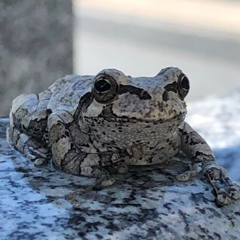

「メディアでできること 〜進化と人の関係〜」
修道高等学校 修学旅行企画
母校の後輩たちに向け、進化生物学の視座とメディア・表現の可能性について講演。

東京在住・会社員 / 進化生物学・芸術工学
九州大学理学部生物学科にて数理生物学を専攻（学士:理学、副専攻:人文学）し、九州大学大学院 芸術工学府 未来共生デザインコースにて修士（芸術工学）を修了。2026年4月より東京にて会社員として勤務しています。
ヒトの心理や感情の進化的維持メカニズムに関する数理研究のほか、科学コミュニケーションや一般・学校向けの講演、ドラム演奏、日本文化の探求などに取り組んでいます。

中学生・高校生を対象とした個別・集団指導での理科指導に従事。

ヒトが集団内で維持してきた過度な不安や抑うつといった心理特性の適応的意義について、ゲーム理論や地域間環境格差、季節変動を取り入れた数理モデルを通じて理論的に解析しています。
ヒトの情動的苦痛や不安感受性遺伝子がなぜ集団内で淘汰されずに維持されてきたのかを数理モデルによって検証。解析の結果、不安を引き起こすアレルは極めて危険な環境ではなく、中程度のストレス環境（適度なリスク環境）において選択有利になり得ることが示されました。

学会等の学術発表とは別に、科学コミュニケーション、サイエンスカフェ、大学講義でのゲスト登壇、高校企画、市民向けワークショップなどで行ってきた講演・発表の記録です。
修道高等学校 修学旅行企画
母校の後輩たちに向け、進化生物学の視座とメディア・表現の可能性について講演。
ウェルビーイングラボ
神仏習合の歴史や、寺院と神社の混淆の痕跡について解説。
九州大学大学院 芸術工学府 メディアサイエンス講義
日本民俗学の知見と人間の知覚構造が、情報やメディア表現に与える影響について講義。
九州大学 芸術工学府「ゲイコウアート＆サイエンスカフェ」
進化医学の視点から、病気や身体の防御反応が持つ生物学的意義を一般向けに対話形式で解説。
エデュパーク サイエンスキャンプ
小中学生向けに、生命の進化の仕組みと病気の関わりについてわかりやすく解説。
ウェルビーイングラボ
宗教文化士の視点から、身近な神社の成り立ちや歴史的背景を紐解く市民向けトーク。
九州大学 芸術工学府「ゲイコウアート＆サイエンスカフェ」
進化医学・数理生物学の視点から、ヒトの病気や心身の仕組みについて対話形式で紹介。
九州大学 芸術工学府「ゲイコウアート＆サイエンスカフェ」
バイオガス技術の仕組みと、生物資源を活用したエネルギー循環について発表。
株式会社ファーマフーズ (Pharma Foods)
バイオテクノロジーと代替モデルに関するプレゼンテーションを実施。
エデュパーク サイエンスキャンプ
小中学生を対象に、生命の歴史と病気の捉え方についてのサイエンスプログラムを実施。
エデュパーク サイエンスキャンプ
身の回りの微生物や菌類（キノコ・カビ）の世界について、子どもたち向けに講義・解説。
13歳よりドラムを開始。ロックを基盤としつつ、ブルース、ボサノバ、ジャズフュージョン、ラップメタルなど幅広いジャンルの演奏に取り組み、九大フォークソング部では部長を務めました。
現在はバンド（@j1_nox）等でのドラムを担当。過去には東方instオリジナルバンド「Theoretical East」、ラップメタルバンド「Age Against the Democracy」等でもドラムを担当しました。

宗教文化士として神仏習合や本地垂迹説、日本人の信仰観・死生観の変遷をリサーチしています。市民向け勉強会やワークショップにて、神社仏閣の歴史や身近な信仰文化を解説する活動も行っています。

子役時代に出演した映画作品およびラジオドラマの記録です。
主演 / 監督: 深作健太 / 脚本: 鴨義信（全国劇場公開作品）
為永尊 役 / 監督: 天野千尋 / 脚本: 鴨義信 / 主演: 中村ゆり
マナブ 役 / 原作: 重松清（NHK ラジオドラマ）
研究や講演、お仕事、その他各種ご連絡・メッセージは X または Note よりお気軽にお送りください。